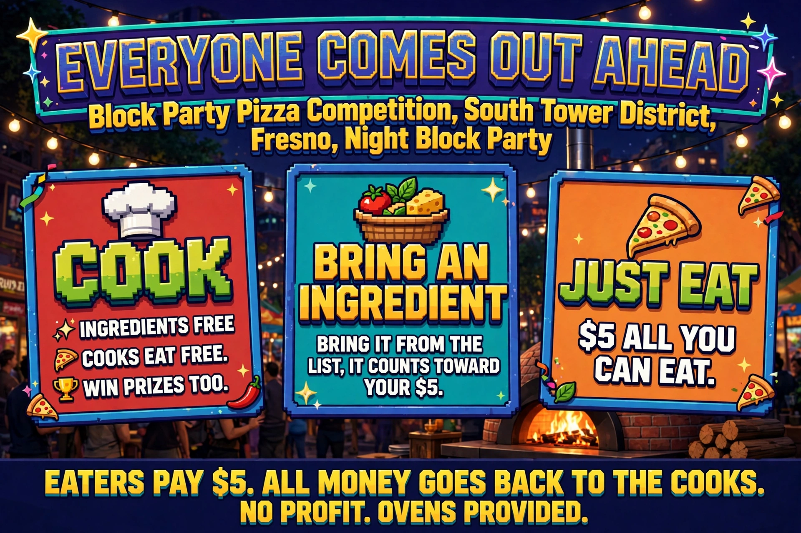

Cooks are not paid labor. A cook's benefit is eating free and cooking with ingredients provided free.
Bring an ingredient
Bring it from the list. It counts toward your $5.
Bring $5 or more in listed value and you are covered. Bring less and cash tops up the rest.
Just eat
$5, all you can eat.
Nobody eats for zero. Every eater or bringer contributes at least $5 net, in cash, listed ingredients, or both.

How it works: cook, bring, or just eat.
Where the money goes
Eater money covers ingredients first. Whatever is left after costs joins the prizes. The books balance, nonprofit-style, and no profit is kept.
The reason $5 a head can cover it: the average eater eats less than a whole pizza. Slices across many pizzas, not one pizza per person, is what makes the math work.
Tips are separate. Anybody can tip a cook if they want to. A tip is a gift, independent of the prizes and independent of how well the cook cooked. It is not a second scoreboard and it is not a payment.
Categories and budgets
The figures below are maximum ingredient budgets per pizza, not prices. A competition pizza must stay inside its category budget. Go over, and it is not playing fair, and the pizza is not eligible.
Category
Max budget
Notes
Pepperoni
$6
Vegetarian
$6
Meat Lovers
$7
Proposed value, to confirm.
Supreme
$8
Cheese
$5
Broad: cheese pizza, cheesy bread, cheese dips and dipping sauces.
Size is free inside the budget (target 14–16 inches, undecided). A bigger pizza or a smaller pizza with finer ingredients: that tradeoff is the skill judges weigh.
Dough: scratch or bought. Piemonte's Italian Delicatessen dough (616 E Olive Ave, Fresno) is the app's known-quantity neighborhood baseline. Scratch dough is budgeted at flour, water, and yeast cost, and the savings may go elsewhere inside the category budget. A cook can win on recipe alone, and scratch can beat store-bought.
The competition layer (optional)
You can come, cook, and eat without ever entering it. The base event works fine on its own. If you do enter:
Staking is per pizza, declared in the app before you begin building that pizza. Enter none, one, or any number of your pizzas, at an independent amount per pizza.
Once committed, the stake is binding. You follow through whether the pizza comes out beautiful or not, so nobody stakes only the pizzas that already turned out great.
The stake sizes the prize. Skill decides the winner. A bigger stake does not buy a better score. There is no cap on prizes.
Judging
Judging happens in the app.
Every pizza is cut into six slices, as near to equal as reasonably possible.
Each slice is judged independently, by the person eating it. One slice, one judgment. Slices can vary, so each earns its own score instead of the whole pizza getting one blanket number.
Each slice that is eaten counts with equal weight toward the pizza's judgment.
A slice nobody eats does not score a zero. It simply reduces the numerator by one. The pizza is judged only on the slices actually eaten.
The slice math is the deal. Each slice is worth about $1, give or take. Six slices is about $6 of value. You paid $5. Eat a whole pizza and you came out ahead, on purpose.
The app
RSVP: cooks RSVP as Cooks. Anyone bringing ingredients RSVPs against a cook's ingredient list.
Cooks eat free. A cook who brings ingredients is reimbursed for them at listed value.
Eaters can eat for free by bringing necessary ingredients off a cook's list, credited at listed value up to the $5.
Each cook's list states, per item: the credited value (per ounce or per unit, like tomato sauce by the ounce), any minimum quality or brand requirement, and where it must be purchased to gain credit. No brand requirement stated means any brand qualifies. A picky cook may exclude a brand; a cook who is not picky may accept cupboard items and improvise with them. That improvisation is part of the skill.
Value is set at the table. The app scans the barcode when the ingredient arrives, and the scan decides what it is worth and whether it qualifies at all. Nobody gains by bringing something the cook cannot use, and no cook gets an unfair deal.
Cupboard and benefit purchases, lawfully: if you already have something in your cupboard and it is not expired, you can clear it out and eat on it. Nothing here asks anyone to break the law: your own things, your own lawful purchases, nothing expired.
One frame of reference for value: Walmart prices. Prices go into the app at the beginning, taken from the Walmart app, manually or automated; the method does not matter. The Walmart price is the credited value regardless of where the item was purchased. Paid more than Walmart? You get Walmart credit, not what you paid. Found it cheaper than Walmart? You keep the margin. Bargain hunting is rewarded, not punished.
The dough exception: items that cannot be found at Walmart, such as the dough, are listed from their neighborhood source.
Keeping the balance
Eating more than average is covered socially: throw extra cash into ingredients, have a friend who eats less, or simply be OK with eating more than average. If everyone comes up short and wants more pizza than there is, that is the signal to scale everything up: more pizzas, more ingredients, keep everybody happy. No new rules, just more of the same thing.
The point of it
The constraints are the training. A cook who learns to make a great pizza inside a budget, on a declared stake, judged against other cooks doing the same, gets better every time. Repeat that across events and years, and the neighborhood produces connoisseurs. In ten years, the best pizza cooks in America come out of the Tower District, because practice under real economics is what makes mastery.
This competition is one facet of a larger platform, alongside CELLTOWER and the arcade game: verified skill, skill decides, voluntary stake sizes the win, real economic constraints, and reputation that compounds over time. The literacy transfers across facets.
Open items
Meat Lovers budget ($7) is a proposed value, to confirm.